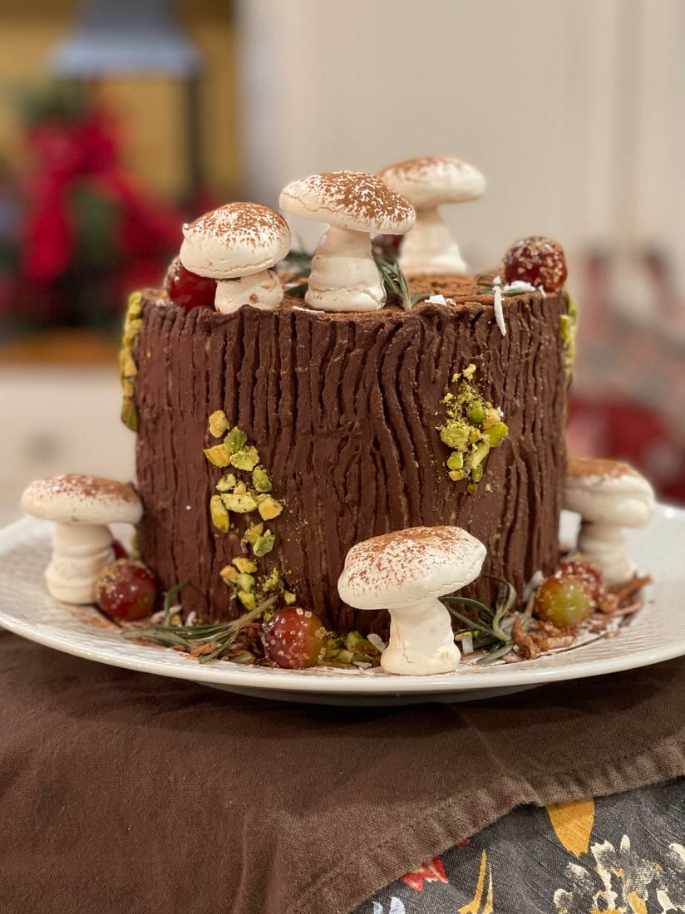

Personal site
A place to share the things I make. Right now that is mostly what comes out of the oven — more to come.
My name is pronounced ak-shi-tha, though I’ve heard everything from A-quiche-a to Aka-sheet-a, so I’ll respond to just about anything.
I love learning about different facets of the global supply chain and exploring it in greater detail. I’m currently at MIT Sloan studying just that. Before Sloan, I was a data science consultant at Oliver Wyman and Head of Growth & Product at an early-stage AI startup called Drumkit.
I studied CS and Statistics during my undergrad at Harvard, and as a native Bostonian, I’m thrilled to be back in Mass!
But more important than all that: I’m a baker! I picked up baking during COVID, taking after my amazing Aunt, and everything I’ve made is below. 🙂 🧁

Seven years of baking in the order it happened — 116 bakes, one photograph each, filterable by what it was and what it tasted like. Plus a recipe builder that asks what you want and writes the whole thing out.
Every club invite, recruiting event and deadline announced across my MIT WhatsApp groups, pulled together once a week with the thing I actually have to do sitting next to it.